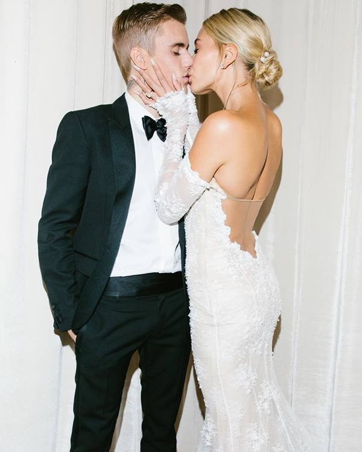
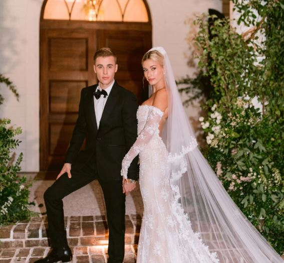

Justin Drew Bieber
Nasceu no dia 1 de março de 1994 em Stratford, Canadá.
É um cantor de R&B, Pop e Dance canadiano.
Quando tinha 12 anos, participou de um concurso local chamado
Stratford Idol onde venceu em 2º lugar. Após a competição
começou a postar covers no Youtube e com apenas 13 anos,
conseguiu mais de 10 milhões de visualizações!
Bieber foi descoberto pelo empresário Scooter Braun,
que apresentou Justin para alguns colegas do ramo da
música, inclusive Usher e Justin Timberlake.
Em 2008 Justin Bieber assinou oficialmente com a Island Records. Em 17 de novembro de 2009 foi lançado o EP “My World”, que foi a primeira parte das duas de seu álbum de estreia. O lançamento vendeu 137 mil cópias em sua primeira semana, recebendo certificado de ouro e de platina. Em 23 de março de 2010 foi lançado seu primeiro album, "My World 2.0" que estreou na 1ª posição da Billboard 200.
Em 19 de junho de 2012 Justin mudou totalmente, do corte de cabelo
ao estilo musical, iniciando sua fase na música Teen-Pop. Esse marco teve inicio com o
lançamento do album Believe.
Em outubro de 2013, Justin anunciou que lançaria uma música nova
toda segunda-feira durante 10 semanas, e que as faixas fariam
parte do album Journals. O projeto foi realizado para divulgar seu
filme, Believe, que foi lançado no dia 25 de dezembro.
No dia 23 de janeiro de 2014 o cantor foi preso
nos Estados Unidos por dirigir embriagado. Após a polêmica, Justin
ficou alguns meses em recuperação das drogas, onde se reaproximou da família e amigos.
Em agosto de 2015 voltou a fazer apresentações, em seguida,
lançou a faixa "What Do You Mean?" do album Purpose, que foi lançado em novembro de 2015.
Em março de 2016 iniciou Purpose Tour que passou
por varios países do mundo e teve fim em julho de 2017.
de 2017.
Em 2018 Justin começou a namorar com a modelo Hailey Baldwin, e casaram-se no mesmo ano no civil. Em setembro de 2019 foi realizada a cerimônia religiosa. Justin voltou com tudo para o ano de 2020! Em janeiro foi ao ar seu documentário, que conta um pouco do seu cotidiano. No dia 14 de fevereiro, Bieber lançou seu 6º album, Changes, que foi dedicado a sua esposa.
 